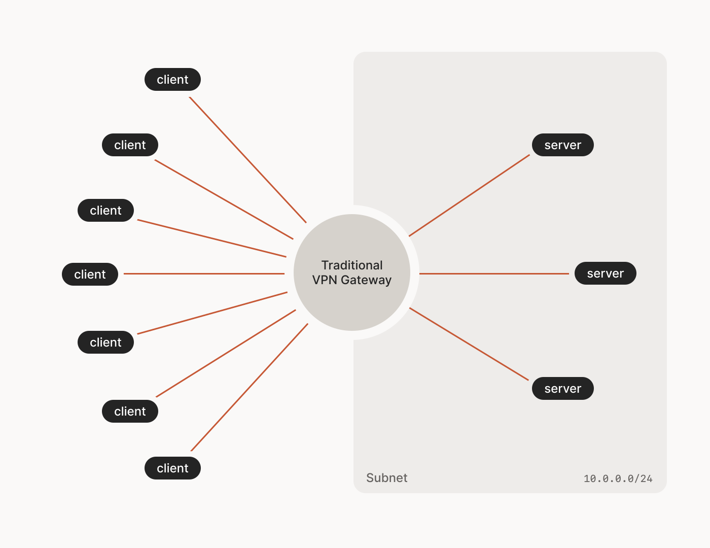
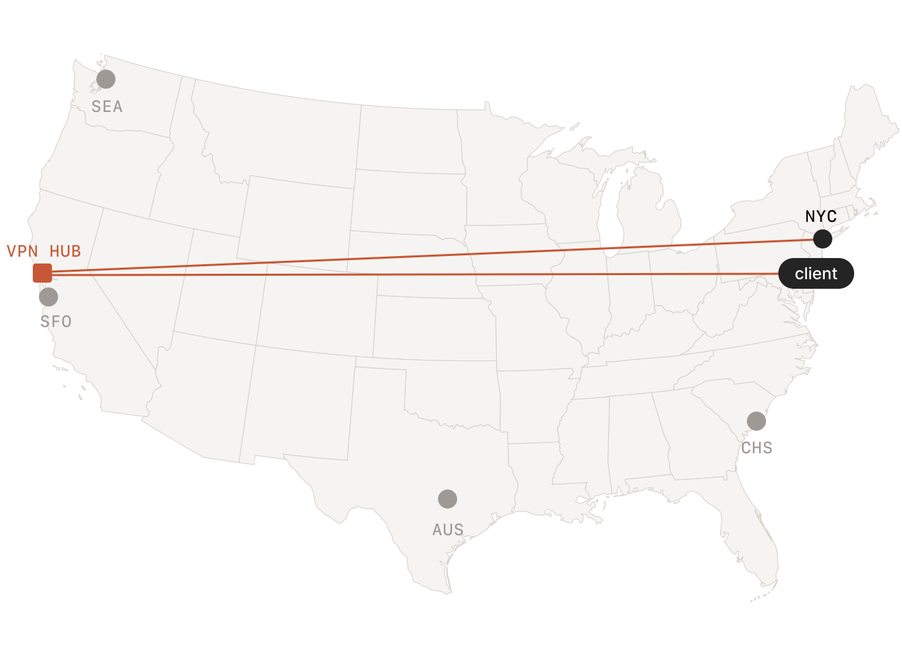
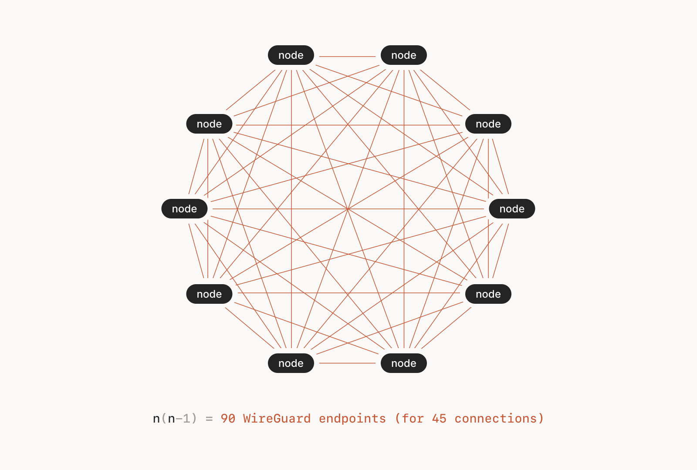
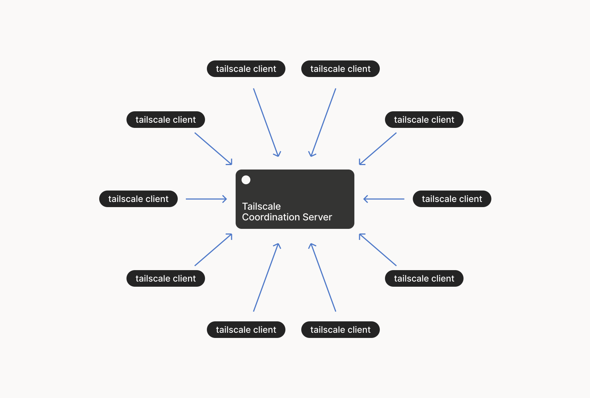

The Open-Source Tailscale Alternative
2025-06-19
Traditionally, VPNs have had a hub-and-spoke architecture. There are
multiple clients, who want to talk to multiple servers. You would then
setup a designated server as the VPN server. This server can access
both, the internet and your office network, which is how you can
relay your ssh connections to the destination.

However, there is a single point of failure with this model, and latency can take a huge hit if both the machines are geographically closer but the hub is in some far-away land.

Thus, newer generation of VPNs solve this by using a mesh network. Where every machine (node) is connected to every other node (machine).

But how do the clients know with whom to talk to? That is handled by a Coordination Server (closed-source), which is essentially a dropbox to exchange public keys.

This looks like a Hub and Spoke model again, but its only the keys that are transferred through this server, the data plane remains the mesh.
There are some NAT punching tricks that help with traversal and firewalls, which is beautifully explained in this blogpost by Tailscale: How NAT traversal works.
Tailscale makes this setup very convenient, all you have to do is install the client (which is open-source) and sign in using your available SSO (gmail/microsoft/github/apple/email). This is what I would recommend if you are new to networking or want a hands-off approach. Here is a detailed comparison between Nebula vs. Tailscale.
Nebula has all of it’s components open-source, which gives you the peace of mind when it comes to trusting your networking. Nebula, as listed on their quick-start page, has the following components:
Now, nebula assumes we already have a Lighthouse setup with a public facing ip. Let’s get that sorted. On the github page they recommend a $6/month digital ocean vm, but I don’t have that kind of money so we’ll look for free things. Google compute has a free tier which gives you a e2-micro VM. This is more than enough for our task.
After signing up for an account, spin up a VM using: Create and start a Compute Engine instance.
standard persistent disk (max 30 GB) to not incur any
charges.No Backups in Data Protection
tab.us-west1,
us-central1, us-east1 for it to be in free
tier.Note: For users in India, us-west1 will have the least
latency among available options. Check out the latency on GCPing for your
region.
After the VM spins up, login to your instance using gcloud-cli:
gcloud compute ssh --zone "zone" --project "project" "instance"Where "zone" is the one you selected while creating your
VM, "project" is the random name generated by google when
you created 'My First Project'. "instance" is
the name of your vm. You can copy paste the auto-generated command on
your Compute Engine
-> VM instances page. Click on the down arrow near
SSH under the Connect column and select
View gcloud command.
You may want to run
sudo apt update && sudo apt upgrade -y to update
your VM install. Since Google thresholds your CPU usage, this will take
some time to complete, till then you can continue with the rest of the
blog till you have to Setup
Lighthouse.
Nebula needs the udp/4242 port open which can be setup
as a firewall rule on your VPC
networks -> VPC networks page.
Select the default NIC,
click on the Firewalls tab, you will see your current
rules. Add a new rule using Add firewall rule button. Name
your rule nebula, pre-selected options are fine where
already done so. Change the Targets to
All instances in this network, add source IPv4 range
0.0.0.0/0 to allow traffic from any IP. Select the
Specified protocols and ports radio and enable
UDP while also adding 4242 in the textbox
below it. Save this rule for immediate effect.
Download and untar(?) the latest version of nebula using (amd64):
wget https://github.com/slackhq/nebula/releases/latest/download/nebula-linux-amd64.tar.gz
tar -xvf nebula-linux-amd64.tar.gzFor other architectures, visit Nebula Releases page.
Move the binaries to /usr/local/bin:
sudo mv nebula nebula-cert /usr/local/bin/Nebula uses certificate authorities to add trusted devices on the Nebula network.
Create a new folder to save ca.crt and
ca.key.
sudo mkdir /etc/nebula
# Create the Certificate Authority
sudo nebula-cert ca -encrypt -name "Myorganization, Inc" -out-qr ca.png -out-crt /etc/nebula/ca.crt -out-key /etc/nebula/ca.keyThis will ask you for a password to encrypt your key file with. You can choose not to encrypt your key if you’ll be using some sort of secure storage. By default, this CA will be created with a one-year expiration, and all certificates signed will be valid until one second before expiration of the CA.
You may not be able to view the ca.png we just created.
Change it’s permissions via sudo chmod 755 ca.png. We will
use this later to connect smartphones conveniently.
ca.key is
of utmost importance. Guard it!All the new devices that will join the Nebula network will need
ca.key to sign the certificates for individual nebula
hosts.
Let’s create some certificates for the lighthouse and other devices.
We’ll be using the subnet 192.168.100.x/24. You are allowed
to use anything you like.
sudo nebula-cert sign -name "lighthouse" -ip "192.168.100.1/24" -ca-crt /etc/nebula/ca.crt -ca-key /etc/nebula/ca.key
sudo nebula-cert sign -name "laptop" -ip "192.168.100.5/24" -ca-crt /etc/nebula/ca.crt -ca-key /etc/nebula/ca.key -groups "laptop,ssh"Enter the passphrase you chose above. This should give you the
crt and key files for both, the
lighthouse and laptop. We kept the ip of both
the devices non-consecutive to allow for more lighthouses to join later
and retain initial IPs.
Download a sample configuration.
curl -o config.yml https://raw.githubusercontent.com/slackhq/nebula/master/examples/config.yml
cp config.yml config-lighthouse.yaml
cp config.yml config.yamlMake the following changes to the config-lighthouse.yaml
file:
Delete the line just under static_host_map:. The
line is: "192.168.100.1": ["100.64.22.11:4242"]
Change the value of am_lighthouse (under
lighthouse) from false to
true.
Delete the line just under hosts: (under
lighthouse). The line is:
- "192.168.100.1"
Scroll to the very bottom, and add the following lines under
firewall and below inbound to add allow ssh
rule:
# Allow ssh between any nebula hosts
- port: 22
proto: tcp
host: anyMake the following change to the config.yaml file:
static_host_map::"192.168.100.1": ["198.51.100.1:4242"]Where 198.51.100.1 is assumed to be the External IP.
firewall and below inbound to add allow ssh
rule:# Allow ssh between any nebula hosts
- port: 22
proto: tcp
host: anyInstall nebula using:
wget https://github.com/slackhq/nebula/releases/latest/download/nebula-linux-amd64.tar.gz
tar -xvf nebula-linux-amd64.tar.gz
sudo mv nebula nebula-cert /usr/local/bin/Again, the above commands assume amd64 architecture.
Create a new directory:
sudo mkdir /etc/nebulaMove the following files you created locally \(\rightarrow\) lighthouse by a method of your choosing:
config-lighthouse.yaml \(\rightarrow\)
/etc/nebula/config.yaml/etc/nebula/ca.crt \(\rightarrow\)
/etc/nebula/ca.crtlighthouse.crt \(\rightarrow\)
/etc/nebula/host.crtlighthouse.key \(\rightarrow\)
/etc/nebula/host.keyNEVER copy your ca.key file.
For some fast copy/paste action, I use wl-clipboard: Wayland clipboard utilities on my Fedora 42.
# Install using dnf
sudo dnf install wl-clipboard -y
# Copy the lighthouse config file from your Local machine
wl-copy < config-lighthouse.yaml
# ON your Lighthouse, paste it in
sudo nano /etc/nebula/config.yaml
# To copy the crt/key files
sudo cat /etc/nebula/ca.crt | wl-copy
# ...and so on.You can test out your config by running on the lighthouse:
sudo nebula -config /etc/nebula/config.yamlAnd if things work well, we can proceed to create a systemd service
for the same. You may press CTRL + C to stop the
process.
Create a new service file:
sudo nano /etc/systemd/system/nebula.serviceWith the following contents:
[Unit]
Description=Nebula
After=network.target
[Service]
ExecStart=/usr/local/bin/nebula -config /etc/nebula/config.yaml
Restart=always
[Install]
WantedBy=default.targetand issue:
sudo systemctl daemon-reload
sudo systemctl enable --now nebula.servicefor the changes to take effect. You check upon the nebula process by using
sudo systemctl status nebula.serviceSimilarly to lighthouse, move the files to desired locations:
sudo mv config.yaml /etc/nebula/config.yaml
sudo mv laptop.crt /etc/nebula/host.crt
sudo mv laptop.key /etc/nebula/host.keyWe had already copied the ca.crt to
/etc/nebula above. If you are doing this for any another
client, do copy the ca.crt too.
You can test out your config by running on your laptop:
sudo nebula -config /etc/nebula/config.yamlTry pinging the lighthouse by opening another terminal window and passing:
ping 192.168.100.1If all goes well, create the same systemd service on your laptop and reap the benefits of your hard labour.
Note: For OSes with SELinux
(e.g. Fedora), your /usr/local/bin/nebula is labeled
user_home_t, so SELinux will treat it as “content in a home
directory” and will not let systemd execute it. You need to relabel it
as a normal executable (bin_t):
Add a file‐context rule (so it survives relabels and restores)
sudo semanage fcontext --add --type bin_t "/usr/local/bin/nebula"Apply the correct context
sudo restorecon -v /usr/local/bin/nebulaVerify
ls -lZ /usr/local/bin/nebula
# should show: ...:object_r:bin_t:s0 instead of ...:object_r:user_home_t:s0Reload and restart your service
sudo systemctl daemon-reload
sudo systemctl restart nebula.service
sudo systemctl status nebula.serviceAfter that, systemd (running in the systemd_t domain)
will be allowed to execute the binary labeled bin_t, and
the 203/EXEC error should go away.
However, you can just install the nebula package from
dnf and change /usr/local/bin/nebula to
/usr/bin/nebula in the systemd service script to avoid the
hassle. Only use the downloaded binaries if the latest version is not
available in dnf package repository.
Fun fact: In Fedora 42, /usr/bin
and /usr/sbin were unified. This tutorial originally
moved the nebula binaries to /usr/local/sbin, but was
modified after reading the Changelog.
Also check SSH access to the lighthouse:
ssh username@192.168.100.1It is easy to add hosts to an established Nebula network. You simply create a new host certificate and key, and then follow the steps under Running Nebula. You will not need to make changes to your lighthouse or any other hosts when adding hosts to your network, and existing hosts will be able to find new ones via the lighthouse, automatically.
To connect your android app, download the Nebula app from Play Store or App Store.
In the app, add a new client by pressing the +
button on top left. Give your nebula network a name.
In the Certificate section, under
Identity, share the public to your trusted Device (one
with ca.key) by preferable means and save the file as
device.pub. Issue the following commands to generate a
certificate for your mobile:
sudo nebula-cert sign -in-pub device.pub -name "mobile" -ip "192.168.100.6/24" -ca-crt /etc/nebula/ca.crt -ca-key /etc/nebula/ca.key -out-qr mobile.pngMake note of the IP’s we have been generating. You will need to manage the mappings yourself.
mobile.png QR code that comes from this.mobile.png we just
created.sudo chmod 755 mobile.pngIn the CA section, scan the ca.png that we created
earlier.
Proceed to Hosts and Add a new entry.
192.168.100.1) of your
Lighthouse,198.51.100.1) and port
(4242) of Lighthouse.